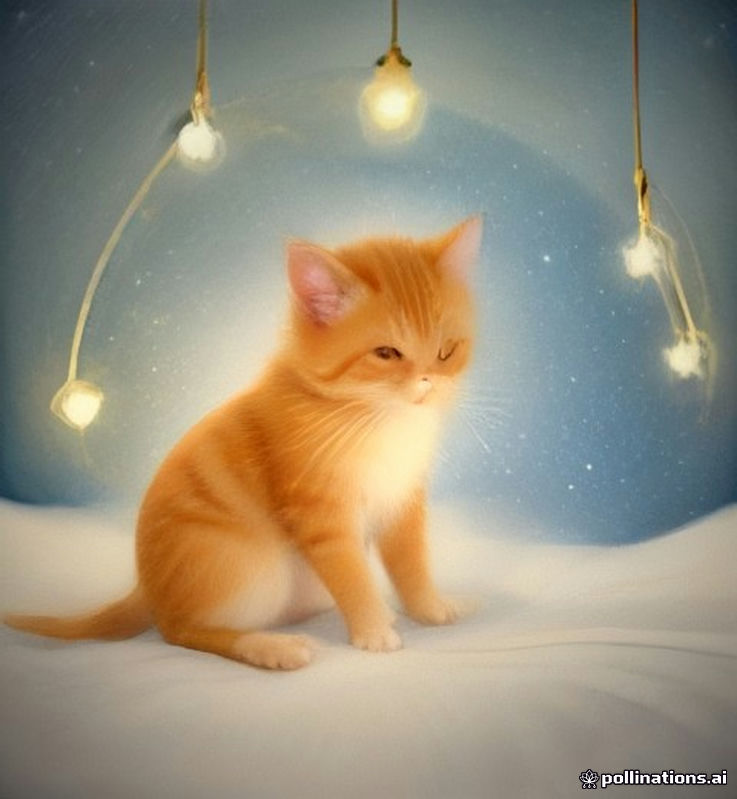
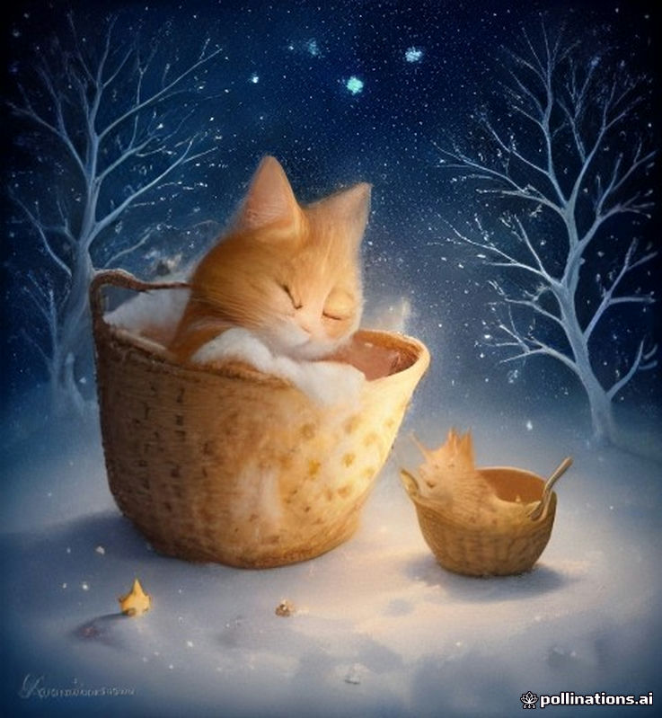
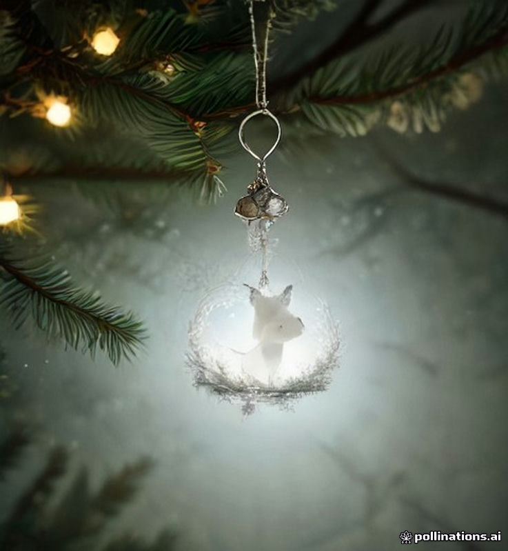
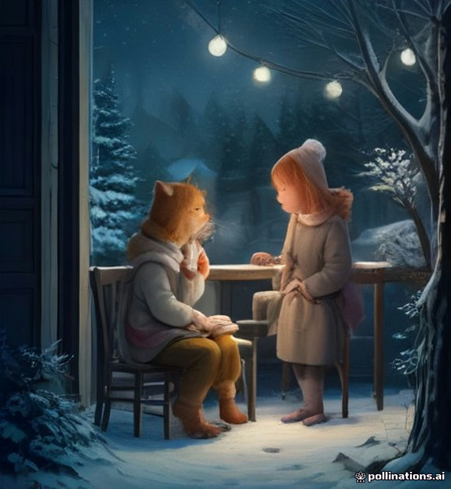

A tiny moth discovers that even when the clouds hide the night sky, a little bit of starlight can be found hanging from the branches in Loki’s Town.
Mallow was a moth with wings the color of moonlight and a coat as fluffy as fresh snow. While other moths loved the bright buzz of the streetlamps in the plaza, Mallow preferred the quiet, distant twinkle of the stars. But tonight, the sky over Loki’s Town was tucked under a thick, grey blanket of clouds. Not a single star peeked through. Mallow sat on a frosty fence post, feeling a bit lonely. "Where did the sparkle go?" she wondered, her antennae drooping just a little bit in the chilly 9°C air.

High up in the studio window, I saw Mallow’s sad little silhouette. Pip and I had been busy all afternoon, blowing glass and painting delicate patterns on our new holiday ornaments. We had stars, crescents, and tiny spheres that looked like trapped nebulae. "Pip," I whispered, adjusting my teal scarf, "I think someone needs a bit of celestial magic." We gathered our finest creations—the ones that glowed with a soft, inner light—and stepped out into the crisp evening air. The snow crunched softly under my paws as we headed toward the plaza.

With Pip’s help, we hung the ornaments on the lowest branches of the old pine tree. Each one was a tiny masterpiece of pixel-perfect detail. When we finished, the tree didn't just look decorated; it looked like a piece of the night sky had fallen down to visit us. Mallow noticed the glow and fluttered over, her wings beating silently. She landed right next to a silver star ornament. It was so bright and clear she could see her own reflection in the glass. She wasn't looking at a cold, distant star anymore; she was finally touching one.

The clouds didn't clear that night, but it didn't matter. The plaza was filled with a warm, golden light that made the snow sparkle like diamond dust. Mallow spent the whole evening dancing between the branches, her heart full of joy. Pip and I watched from the bakery porch, sharing a small bowl of warm milk. We realized that sometimes, when the stars are hidden, you just have to make your own light. As the town fell asleep, the ornaments kept watch, shining for every little creature who looked upward in hope.